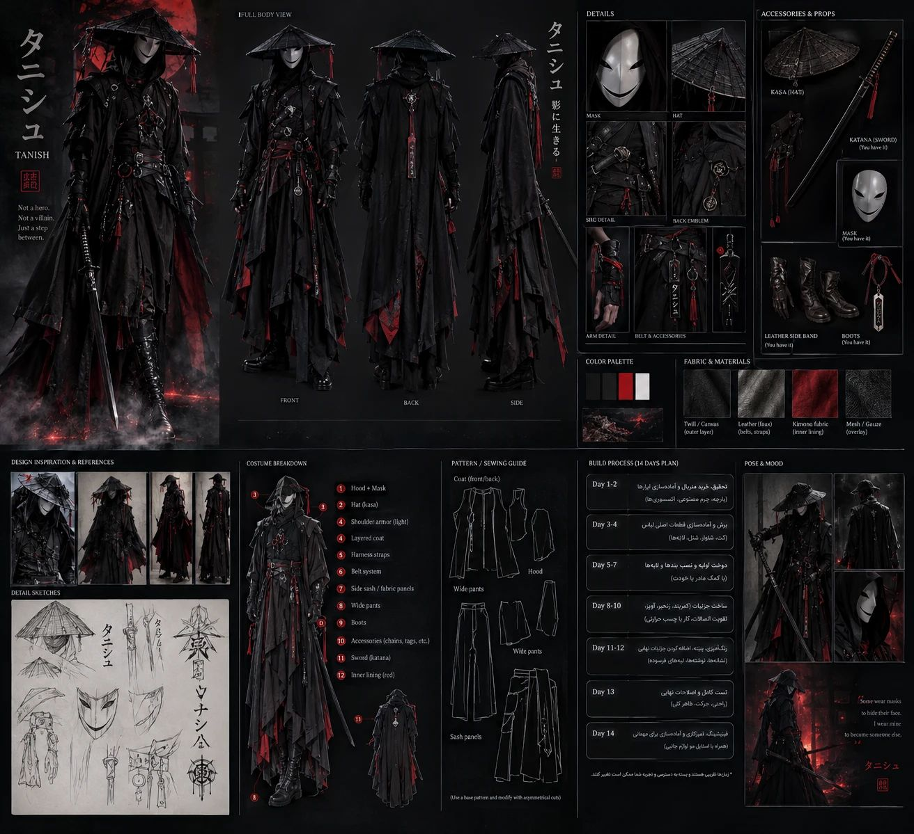
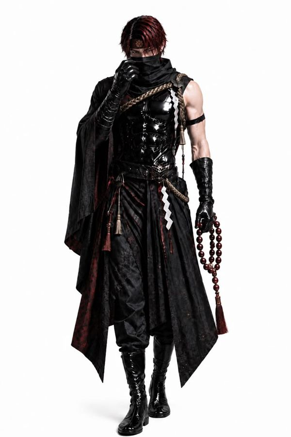
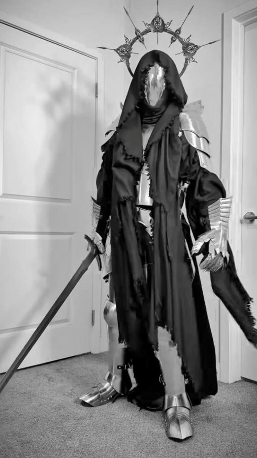
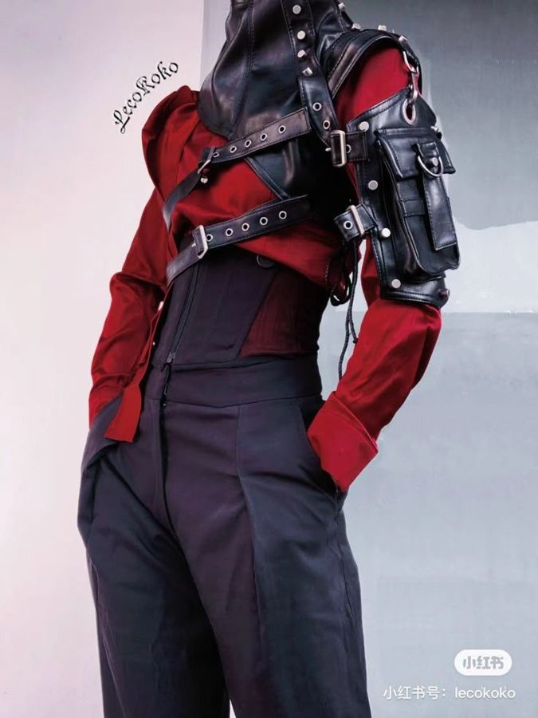
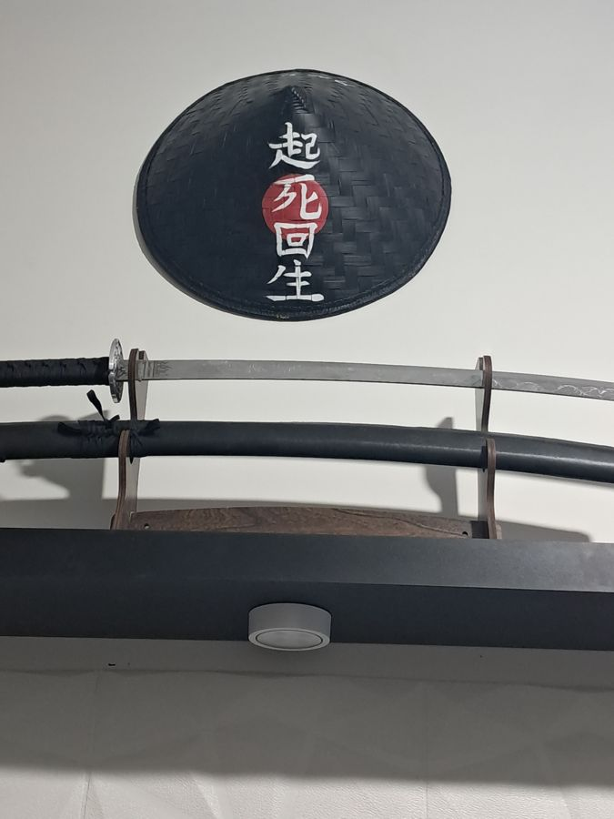
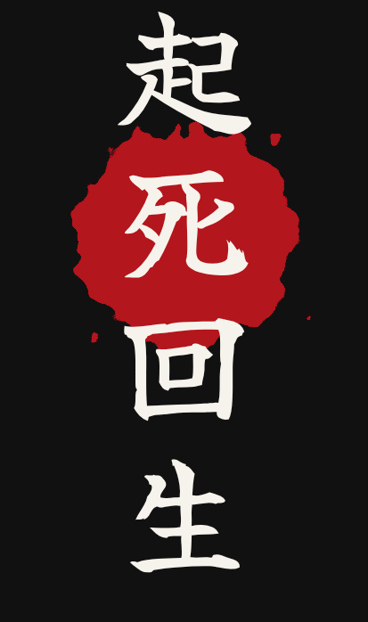
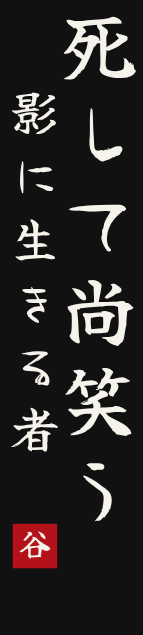
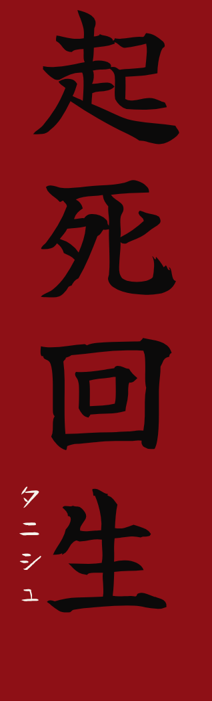

کاستوم هالووین ۱۴ آبان ۱۴۰۵: طراحی کامل، لیست خرید با قیمت، الگوهای اندازهی خودت، آموزش ساخت تکتک قطعهها و برنامهی روزبهروز. تیکها و قیمتهایی که اینجا وارد میکنی ذخیره میشن.
کانسپت: «شبحِ خندان»
ترکیب رونین کهنهی ژاپنی با کمی تکوِر و گوتیک. مشکی غالب، قرمز خونی برای لایههای داخلی، سفید فقط روی ماسک و نوشتهها. همهچی از کلاه خودت شروع میشه: 起死回生 یعنی «از مرگ برخاستن».
- 1کلاه حصیری خودت + منگولههای قرمز + بند چونه
- 2ماسک کاگهتانه روی بالاکلاوا
- 3هود نوکتیز، آستر قرمز، نور LED قرمز داخلش
- 4شنل کوتاه ریشریش روی شونهها
- 5پیشسینهی کیمونو: مشکی روی قرمز، راست روی چپ
- 6سردوشی (Sode) فقط شونهی چپ، با بند قرمز
- 7طناب شیمهناوا + شیدههای کاغذی سفید
- 8حمایل شمشیر (تسمهی مشکی)
- 9اوبی قرمز + کمربند سگک صلیبی خودت
- 10پنل جلو قرمز با 起死回生 (چاپ DTF)
- 11طلسمهای کاغذی (Ofuda) روی زنجیر
- 12کت رونین: کیمونویی، ریشریش، چاکدار
- 13فقط آستین راست؛ گشاد، با ستون کانجی سفید
- 14دست چپ: یقهاسکی + مچبند چرمی + دستکش + بازوبند قرمز
- 15تسبیح مشکی + دستکش نیمانگشتی
- 16شلوار خیلی گشاد، جمعشده روی پوتین
- 17پوتین خودت
- 18دستهی کاتانا روی شونهی راست + چارم قرمز با زنگوله
- 19نوک غلاف کنار لگن چپ
- 20پردهی توری پشت کلاه
- 21دستهی شمشیر و چارم از پشت
- 22طرح پشت: 起死回生 سفید با دایرهی قرمز پشت 死 (مثل کلاهت)، روی دامن کت زیر اوبی
- 23نوارهای پارهی توری
- 24شمشیر مورب روی پشت با دو حلقهی غلاف
- 25دامن کت از پشت بلندتر و پارهتر
- 26سردوشی از پشت
داستان (برای وقتی ازت پرسیدن «چی هستی؟»)
تانیش یه رونین بود که یه شب بارونی تو جنگ کشته شد. صبح، توی گور خودش بیدار شد با یه ماسک روی صورتش که لبخند میزد؛ ماسک کسی که کشته بودش. از اون شب لباس مردهها رو تنش داره: یقهی راسترویچپ، طلسمهای کاغذی قبرستون از کمرش آویزونه، یه طناب مقدس روحش رو مهر و موم کرده و آستر قرمزش هنوز رنگ همون شبه. قبل از اینکه ببینیش، صدای زنگولهی شمشیرش رو میشنوی.
«نه قهرمان، نه شرور. فقط کسی که یه بار مُرده و هنوز لبخند میزنه.»
Died once. Still smiling.
پالت
قانون رنگ: قرمز فقط از «داخل» بیرون میزنه (آستر هود، زیر یقه، لای چاکها، اوبی، بندها). هیچ قطعهی بزرگی از بیرون قرمز نیست، جز پنل جلو.
کانجیها
| 起死回生 | kishi kaisei از مرگ برخاستن (روی کلاه، پشت کت، پنل جلو) |
| 笑う亡霊 | warau bōrei شبحِ خندان (لقب) |
| 死して尚笑う | shishite nao warau حتی بعد از مرگ میخنده (آستین) |
| 影に生きる者 | kage ni ikiru mono کسی که در سایه زندگی میکنه (آستین) |
| タニシュ | ta-ni-shu اسم خودت به کاتاکانا |
هشت جزئیاتی که این کاستوم رو «شخصیت» میکنه
- یقهی مردههاتو ژاپن کیمونو رو فقط برای مردهها راسترویچپ میبندن. پیشسینهی تو عمداً همینطوریه. اگه نخواستی، فقط ترتیب دوخت نوارها رو برعکس کن.
- قرمز از درونآستر هود دور ماسک سفید یه قاب خونی میسازه. لای چاکهای کت و زیر یقه هم قرمز پیداست.
- یه دست زره، یه دست پارچهچپ: سردوشی و مچبند پیداست. راست: آستین گشاد با نوشته. عدم تقارن مثل رفرنسهای مو قرمز و کلود.
- کلاه = امضاطرح پشت کت دقیقاً از کلاه خودت کپی شده: ستون سفید و دایرهی قرمز پشت 死.
- طناب مُهرشیمهناوا (طناب مقدس معابد شینتو) با شیدههای کاغذی، یعنی یه چیزی تو این بدن «مهر و موم» شده.
- صدازنگولههای چارم شمشیر. وقتی راه میری صدا میده.
- نورنور قرمز LED داخل هود. تو تاریکی فقط ماسک دیده میشه.
- هیچ پوستی نیستبالاکلاوا، گریم مشکی دور چشم و دستکش. غیر از نوک انگشتها، هیچجای آدم دیده نمیشه.
refرفرنسها و کانسپت ChatGPT
چیزهایی که ازشون الهام گرفته شد

تفاوت با کانسپت ChatGPT: ماسک خودت (سفید با لبخند مشکی) به جای ماسک نقرهای؛ کلاه خودت با نوشته؛ سردوشی یکطرفه؛ آستین تکی؛ طناب شیمهناوا؛ قرمز کنترلشدهتر.




چیزهایی که داری و کجا میرن
تقریباً همهی وسایلت جا پیدا کردن. فقط کمربند فشنگی و جین با این ست جور نیستن.
لیست خرید
به ترتیب مسیر چیده شده. قیمتها تخمینی و به هزار تومنن، از آگهیهای آنلاین شهریور تا آبان ۱۴۰۵ (دلار حدود ۲۷۰). قیمت واقعی رو تو کادر هر قلم بنویس تا جمع واقعی حساب بشه.
الگوها و نقشهی برش
همهی اندازهها از بدن خودت حساب شدن. تیکههای منحنی (شلوار، هود، جیب) هم اینجا نقشهی اندازهدار دارن و هم توی PDF با اندازهی واقعی. بقیه مستطیلن و اندازهی برششون همینجاست.
اندازههای تو
آزادیها (ease): دور سینهی کت ۱۲۰ (۲۸ سانت گشادتر از بدن، برای افتادگی کیمونویی). دور باسن شلوار ۱۱۲ (۱۶ سانت). دمپای شلوار ۸۴ (خیلی گشاد، روی پوتین جمع میشه).
دانلودها
قانون درز
تیکههای منحنی (شلوار، هود، جیب)
الگو بدون درزه. موقع برش ۱.۵ سانت دورتادور اضافه کن. استثنا: تای کمر (۵ سانت) و تای دمپا (۴ سانت) داخل الگو کشیده شدن.
تیکههای مستطیلی
اندازهها اندازهی برش هستن و درز توشون حساب شده. لبههایی که قراره ریشریش بشن هیچ درزی نمیخوان.
نقشههای اندازهدار (سانتیمتر)
شلوار — جلو — ×۲ (یک جفت قرینه) — پارچهی شلوارPants FRONT
- کمر کشدار: ۵ سانت بالای خط کمر داخل الگوست (تای ۵ سانتی برای کش ۳.۵).
- دمپا: ۴ سانت پایین داخل الگوست (تونل بند برای جمع کردن روی پوتین).
- دو علامت روی درز کناری = دهانهی جیب (۱۷ سانت).
شلوار — پشت — ×۲ (یک جفت قرینه) — پارچهی شلوارPants BACK
- خط وسط پشت ۴ سانت از جلو بلندتره (برای نشستن راحت).
- فاق پشت ۱۲ سانت بیرون میاد؛ منحنی رو نرم بکش.
کلاه شنل (هود) — ×۲ مشکی + ×۲ قرمز (آستر)Hood side
- لبهی چپ = دور صورت. لبهی بالا و منحنی پشت = درز وسط (نوک تیز مثل داسمرگ).
- اندازه برای دور سر ۵۸ + بالاکلاوا + ماسک + جا برای کلاه حصیری گشاد گرفته شده.
- علامت روی خط گردن = جای شونه؛ به وسط نیمدایرهی شنل میخوره.
کیسهی جیب — ×۴ — هر پارچهی نازک مشکی یا همون پارچهPocket bag
- لبهی صاف به درز کناری شلوار دوخته میشه؛ بالای کیسه ۱۰ سانت زیر خط کمر.
بدنهی کت ×۲ (قرینه) — ۳۳ × ۲۶۲Coat body panel (cut size)
- هر تیکه از لبهی پایین جلو، از روی شونه، تا لبهی پایین پشت یکسرهست. شونه درز نداره، فقط تا میخوره.
- لبهی بالای شکل (y=0) = لبهی داخلی. نیمهی پشت به تیکهی قرینه دوخته میشه (درز وسط پشت). نیمهی جلو باز میمونه.
- یقه: نقطهی گردن ۱۰.۵ سانت از لبهی داخلی روی خط شونهست. از اونجا یه خط صاف تا ۲۸ سانت پایینتر روی لبهی جلو بکش (یقهی V، قسمت قرمز رو ببُر). پشت گردن فقط یه گودی ۲ سانتی.
- علامتها: حلقهی آستین ۲۲ سانت دو طرف خط شونه. شروع چاک کناری ۷۵ سانت پایینتر از خط شونه.
شنل کوتاه — نیمدایرهی توخالی ×۲Capelet
- با یه نخ و یه مداد مثل پرگار بکش: شعاع ۸ و ۵۳.۵ از یه نقطه.
- لبهی بیرونی بعداً نامنظم و ریشریش بریده میشه (خطچین قرمز، طول نهایی ۳۰ تا ۴۵).
سردوشی مونتاژشدهSode, 3 lames + top plate
- EVA ۵ میل. الگوی ۱:۱ توی PDF صفحهی ۴۸ و ۴۹.
- تیغهها با بند قرمز آویزونن، فاصلهی ۱ سانتی که قرمز پیدا باشه. ارتفاع کل حدود ۲۸ سانت.
تیکههای مستطیلی (اندازهی برش)
آستین راست (فقط یکی)×۱
Right sleeve · 63×87 cm
از طول ۸۷ تا میشه (۴۳.۵). لبهی ۶۳ سانتی طول آستینه. سر آستین ریشریش.
یقهی کیمونویی×۲ (وسط پشت به هم وصل)
Collar band · 13×146 cm
بعد از وصل = ۱۳×۲۹۰. از طول تا میشه؛ پهنای نهایی ۵ سانت. نصفش لایی بزن.
پیشسینهی کیمونو — پایه×۱
Kimono dickey base · 34×40 cm
یقهاسکی زیرش پوشیده میشه؛ این فقط جلوی سینه رو کیمونویی نشون میده.
پیشسینه — نوار یقهی مشکی×۲
Dickey collar strip (black) · 8×45 cm
پیشسینه — نوار یقهی قرمز×۲
Dickey collar strip (red) · 10×45 cm
زیر نوار مشکی، ۱.۵ سانت بیرون میزنه.
اوبی (شال کمر)×۲ (به هم وصل = ۲۴۶)
Obi sash · 34×124 cm
پهنای نهایی ۱۵. نصفش لایی چسبدار. دوبار دور کمر میپیچه؛ شمشیر بین دو لایهاش فرو میره.
پنل جلو (مائهدارِه)×۱
Front panel · 28×82 cm
۶ سانت بالا تونل برای رد شدن کمربند. چاپ DTF «起死回生» روش.
پنلهای کناری قرمز×۲
Red hip panels · 45×85 cm
از لای چاک کت پیداست. پایین ریشریش.
آستر هود×۲
Hood lining · 41×55 cm
با الگوی هود برش بخوره (این فقط جای اشغالیه روی پارچه).
روکش توری روی پنلها×۲
Gauze overlays · 50×95 cm
کاملاً پارهپاره.
پردهی پشت کلاه حصیری×۱
Kasa veil · 30×100 cm
چین بخوره به نیمهی پشت لبهی کلاه.
نوارهای پاره (شونه و پشت کت)×۸ تا ۱۰
Rag strips · 8×120 cm
هر کدوم یه پهنا و طول متفاوت.
مچپیچ ساق (اختیاری)×۲
Kyahan leg wraps · 40×36 cm
روی دمپای شلوار و بالای پوتین بسته میشه؛ با بند قرمز.
تسمهها
| تیکه | مواد | کجا |
|---|---|---|
| حمایل شمشیر (تسمهی اصلی) Sword baldric | تسمهی ۳ سانتی × ۱۶۰ + قفل کوله + سگک تنظیم | از شونهی راست، روی سینه، تا لگن چپ؛ پشت بدن شمشیر به موازاتش. |
| دو حلقهی غلاف Scabbard loops | تسمهی ۳ سانتی × ۲۸ ×۲ + چسب ولکرو | یکی ۱۵ سانت زیر دهانهی غلاف، یکی ۵۰ سانت پایینتر. |
| حلقهی شونهی سردوشی Sode shoulder loop | تسمهی ۳ سانتی × ۷۰ + قفل کوله | دور شونهی چپ و زیر بغل؛ صفحهی بالای سردوشی با پرچ بهش وصل میشه. |
| کش بازو Sode arm band | کش ۲ سانتی × ۳۲ | از پشت تیغهی ۲ رد میشه دور بازو که سردوشی تکون نخوره. |
نقشهی برش روی پارچه
عرض پارچه ۱۵۰ فرض شده. اگه ۱۴۰ بود، تیکههای ستون آخر رو زیر بقیه جا بده و ۳۰ سانت بیشتر بخر. متراژهای لیست خرید از قبل ۵ درصد برای جمع شدن بعد از شستشو اضافه دارن.
پارچهی کت — کتان کجراه مشکی430 cm
پارچهی شلوار — دولا (عرضی تا شده، دو لایه)135 cm
پارچهی قرمز250 cm
لیست کامل برش
| تیکه | پارچه | برش (سانت) | تعداد | توضیح |
|---|---|---|---|---|
| شلوار — جلو Pants FRONT | پارچهی شلوار | PDF / نقشه | ×۲ (یک جفت قرینه) | بدون درز؛ ۱.۵ اضافه کن |
| شلوار — پشت Pants BACK | پارچهی شلوار | PDF / نقشه | ×۲ (یک جفت قرینه) | بدون درز؛ ۱.۵ اضافه کن |
| کیسهی جیب Pocket bag | کتان مشکی | PDF / نقشه | ×۴ | بدون درز؛ ۱.۵ اضافه کن |
| کلاه شنل (هود) Hood side | مشکی + آستر قرمز | PDF / نقشه | ×۲ مشکی + ×۲ قرمز (آستر) | بدون درز؛ ۱.۵ اضافه کن |
| بدنهی کت (از جلو تا پشت، یک تکه) Coat body panel | کتان مشکی | 33 × 262 | ×۲ قرینه | تای وسط (۱۳۱ سانت) = خط شونه. یه طرف جلو، طرف دیگه پشت. لبهی داخلی = درز وسط پشت + لبهی جلوی باز. |
| آستین راست (فقط یکی) Right sleeve | کتان مشکی | 63 × 87 | ×۱ | از طول ۸۷ تا میشه (۴۳.۵). لبهی ۶۳ سانتی طول آستینه. سر آستین ریشریش. |
| یقهی کیمونویی Collar band | کتان مشکی | 13 × 146 | ×۲ (وسط پشت به هم وصل) | بعد از وصل = ۱۳×۲۹۰. از طول تا میشه؛ پهنای نهایی ۵ سانت. نصفش لایی بزن. |
| شنل کوتاه (نیمدایرهی توخالی) Capelet half | کتان مشکی | 107 × 54 | ×۲ | شعاع داخلی ۸ (برش) / شعاع بیرونی ۵۳.۵. با نخ و سوزن تهگرد مثل پرگار بکش. لبهی بیرون ریشریش. |
| پیشسینهی کیمونو — پایه Kimono dickey base | کتان مشکی | 34 × 40 | ×۱ | یقهاسکی زیرش پوشیده میشه؛ این فقط جلوی سینه رو کیمونویی نشون میده. |
| پیشسینه — نوار یقهی مشکی Dickey collar strip (black) | کتان مشکی | 8 × 45 | ×۲ | |
| پیشسینه — نوار یقهی قرمز Dickey collar strip (red) | قرمز | 10 × 45 | ×۲ | زیر نوار مشکی، ۱.۵ سانت بیرون میزنه. |
| اوبی (شال کمر) Obi sash | قرمز | 34 × 124 | ×۲ (به هم وصل = ۲۴۶) | پهنای نهایی ۱۵. نصفش لایی چسبدار. دوبار دور کمر میپیچه؛ شمشیر بین دو لایهاش فرو میره. |
| پنل جلو (مائهدارِه) Front panel | قرمز | 28 × 82 | ×۱ | ۶ سانت بالا تونل برای رد شدن کمربند. چاپ DTF «起死回生» روش. |
| پنلهای کناری قرمز Red hip panels | قرمز | 45 × 85 | ×۲ | از لای چاک کت پیداست. پایین ریشریش. |
| آستر هود Hood lining | قرمز | 41 × 55 | ×۲ | با الگوی هود برش بخوره (این فقط جای اشغالیه روی پارچه). |
| روکش توری روی پنلها Gauze overlays | تور مشکی | 50 × 95 | ×۲ | کاملاً پارهپاره. |
| پردهی پشت کلاه حصیری Kasa veil | تور مشکی | 30 × 100 | ×۱ | چین بخوره به نیمهی پشت لبهی کلاه. |
| نوارهای پاره (شونه و پشت کت) Rag strips | تور مشکی | 8 × 120 | ×۸ تا ۱۰ | هر کدوم یه پهنا و طول متفاوت. |
| مچپیچ ساق (اختیاری) Kyahan leg wraps | پارچهی شلوار | 40 × 36 | ×۲ | روی دمپای شلوار و بالای پوتین بسته میشه؛ با بند قرمز. |
ساخت، قطعه به قطعه
هر قطعه رو باز کن. مامان یعنی کار چرخ خیاطیه؛ بقیه کار دست خودته. زمانها تقریبیان.
01شلوار گشاد (هاکامانما)
مامان۳ ساعت · روز ۳
یه شلوار کشکمر خیلی گشاد با جیبهای کناری و تونل بند تو دمپا، که روی پوتین جمع میشه. الگو: PDF صفحهی ۲ تا ۳۴، یا نقشهی اندازهدار بالا.
- برش: پارچه رو عرضی دولا کن (رو به رو). جلو و پشت رو طبق نقشهی برش بذار؛ فلش راه پارچه موازی لبهی پارچه. دور فاق، کنارهها و داخل پا ۱.۵ سانت درز اضافه کن؛ بالا و پایین نه. ۴ کیسهی جیب. علامتها رو با یه چاک ۵ میلی منتقل کن.
- سردوزی: همهی لبهها رو زیگزاگ یا اورلاک کن (این پارچه زیاد ریش میشه).
- جیب: هر کیسه رو رو به رو بین دو علامت به لبهی کناری جلو و پشت بدوز (درز ۱ سانت). به سمت بیرون اتو کن.
- کنارهها: جلو و پشت رو رو به رو بذار. از کمر تا علامت بالای جیب بدوز، دور کیسهی جیب بچرخ، از علامت پایین جیب تا دمپا ادامه بده.
- داخل پا: هر پاچه جدا.
- فاق: یه پاچه رو برگردون (رو بیرون) و بکن تو اون یکی (رو به رو). کل منحنی فاق رو یکسره بدوز. دوبار بدوز چون کشش زیاد داره. روی منحنی چند تا چاک بزن.
- کمر: ۱ سانت، بعد ۴ سانت تو بزن. بدوز و ۵ سانت باز بذار. کش ۳.۵ سانتی رو به طول ۷۲ سانت رد کن (اول امتحان کن از روی باسن رد بشه)، ۳ سانت روی هم بدوز، دهانه رو ببند.
- دمپا: ۱ سانت، بعد ۳ سانت تو بزن، کنار درز داخل پا ۲ سانت باز بذار. کش گرد یا بند رد کن که روی ساق پوتین سفت بشه.
02کت رونین (ساختار کیمونو)
مامان۵ ساعت در ۳ نوبت · روز ۴ تا ۶
کیمونو فقط از مستطیل ساخته میشه: دو بدنهی بلند که روی شونه تا میخورن، یه آستین و یه نوار یقه. نه حلقهی آستین منحنی داره، نه درز شونه.
- علامتگذاری: روی هر بدنه خط شونه (وسط، ۱۳۱)، حلقهی آستین (۲۲ سانت دو طرف شونه، روی لبهی بیرونی) و شروع چاک (۷۵ سانت دو طرف شونه) رو با گچ بزن.
- درز وسط پشت: دو بدنه رو رو به رو، لبهی داخلی روی هم. فقط نیمهی پشت رو بدوز، از ۲ سانت زیر خط شونه تا پایین. باز اتو کن. نیمههای جلو جدا میمونن (جلوی کت بازه).
- یقه: روی هر نیمهی جلو، از نقطهی ۱۰.۵ سانتی روی خط شونه یه خط صاف تا لبهی داخلی در ۲۸ سانت پایینتر بکش و ببر (یقهی V). پشت گردن یه گودی ۲ سانتی.
- پرس DTF طرح پشت (روی دامن کت، زیر جای اوبی) و طرح آستین، الان که همهچی صافه. جای دقیقش تو بخش چاپ.
- آستین راست: مستطیل ۶۳×۸۷ رو از طول ۸۷ نصف کن تا وسطش پیدا بشه. لبهی ۸۷ سانتی رو رو به رو به لبهی بیرونی بدنهی راست بدوز؛ وسطش روی خط شونه، از علامت ۲۲ جلو تا علامت ۲۲ پشت.
- درزهای کناری: سمت راست: زیر آستین (دو لبهی ۶۳ سانتی) رو بدوز و بدون توقف کنارهی بدنه رو تا علامت چاک ادامه بده. سمت چپ: از علامت ۲۲ تا علامت چاک.
- حلقهی آستین چپ: ۱ سانت دوبار تو بزن و بدوز. اگه بخوای یه برق قرمز داشته باشه، با یه نوار اریب قرمز ۴ سانتی ببندش.
- نوار یقه: دو تیکهی ۱۳×۱۴۶ رو از سر به هم وصل کن (۲۹۰). روی نصف پهنا لایی بزن. از طول تا بزن (رو بیرون) و اتو کن. وسط نوار رو روی درز وسط پشت بذار، لبههای باز نوار رو به لبهی یقه سنجاق کن: دور پشت گردن، پایین یقهی V و تا پایین لبهی جلو. بدوز، سردوزی، به سمت بیرون اتو، و ۰.۵ سانت روی نوار رودوزی کن. زیادیش پایین میمونه که بعداً با بقیه بریده بشه.
- پایین کت سجاف نمیخواد. بعد از پرو (روز ۷) و تو کهنهکاری (روز ۱۰) نامنظم بریده میشه.
03هود و شنل
مامان۲.۵ ساعت · روز ۶
- هود بیرونی: دو تیکهی مشکی رو رو به رو بذار. درز وسط (بالا و منحنی پشت تا نوک) رو بدوز و منحنیها رو چاک بزن. آستر قرمز هم همینطور.
- وصل آستر: هود مشکی و قرمز رو رو به رو بذار، فقط لبهی صورت رو بدوز. برگردون و اتو کن، ۰.۷ سانت رودوزی.
- تونل LED: یه خط دوخت دوم ۲.۵ سانت داخلتر از لبهی صورت بزن. فاصلهی بین دو خط، تونل سیم ریسهی LED میشه. یه دهانهی ۲ سانتی کنار گردن باز بذار.
- شنل: دو نیمدایره رو از یکی از لبههای صاف به هم بدوز (درز وسط پشت). لبههای صاف دیگه میشن جلوی باز.
- وصل هود به شنل: لبهی گردن هود (دو لایه با هم) رو رو به رو به دایرهی داخلی شنل بدوز. درز وسط هود روی درز وسط شنل، علامتهای شونهی هود دو طرف. سردوزی و به سمت پایین رودوزی.
- بست جلو: یه قزن (هوک) یا دکمهقابلمهای زیر گلو. اگه بخوای، یه بند قرمز با گرهی ساده.
- جیب باتری: یه جیب ۸×۱۰ داخل شنل، سمت چپ، با ولکرو.
04پیشسینهی کیمونو (دیکی)
مامان۴۵ دقیقه · روز ۷
یه «سینهی کیمونو» که روی یقهاسکی پوشیده میشه. از جلو کاملاً مثل کیمونوی دولایه دیده میشه و نیاز نیست کیمونوی کامل بدوزی.
- پایهی مشکی ۳۴×۴۰: دورتادور ۱ سانت سجاف.
- نوارهای قرمز ۱۰×۴۵ رو از طول تا کن (۵ سانت). نوارهای مشکی ۸×۴۵ (۴ سانت).
- روی پایه دو تا V بکش که ۲۲ سانت زیر لبهی بالا همدیگه رو قطع کنن.
- هر نوار مشکی رو روی یه نوار قرمز بدوز طوری که ۱.۵ سانت قرمز بیرون بزنه.
- ترتیب: اول نوار سمت چپ بدن تو رو بدوز، بعد نوار سمت راست بدن رو روش. این میشه راسترویچپ، همون یقهی مردهها. برای یقهی معمولی ترتیب رو برعکس کن.
- بالا: یه کش گرد دور گردن (حدود ۴۰ سانت، امتحان کن). پایین دو گوشه: دو بند که پشت کمر، زیر کت، گره بخوره.
05اوبی، پنل جلو و پنلهای کناری
مامان۱.۵ ساعت · روز ۷
- اوبی: دو تیکهی ۳۴×۱۲۴ رو از سر به هم بدوز. روی نصف پهنا (۱۶ سانت) لایی بزن. از طول رو به رو تا بزن. لبهی بلند و یه سر رو بدوز، برگردون، سر دیگه رو با دست ببند. اتو، ۰.۵ سانت رودوزی دور تا دور. نتیجه: ۱۵×۲۴۴.
- بستن اوبی: دو دور دور کمر، سر اضافه رو تا کن و پشت سمت چپ یه گرهی صاف بزن (یا دو دکمهقابلمهای که فقط یه بار تنظیم بشه). شمشیر لای لایهی اول و دوم سمت چپ فرو میره، با لبهی تیغه رو به بالا، به سبک سامورایی.
- پنل جلو: اول پرس DTF. بعد دو کناره ۱ سانت دوبار تو. بالا ۶ سانت تو بزن و ۱ سانت از لبه بدوز (تونل کمربند). پایین ریشریش (بدون سجاف).
- پنلهای کناری قرمز: مثل پنل جلو، بدون چاپ. روی هر کدوم یه پنل توری مشکی شل، با همون تونل. کاملاً پارهپاره.
- همهی پنلها روی کمربند سگک صلیبی سوار میشن: کمربند از تونلها رد میشه و روی اوبی بسته میشه.
06سردوشی (Sode) از فوم EVA
۴ ساعت در ۴ نوبت · روز ۳ تا ۷
- برش: صفحهی ۴۸ و ۴۹ PDF رو ببر، روی EVA ۵ میل بکش. با کاتر تیز، تیغه عمود، چند ضربهی سبک. تیغه رو زود عوض کن.
- پخ: لبهی رویی رو با کاتر یا سنبادهی ۸۰ کمی ۴۵ درجه کن که مثل ورقهی فلز بشه.
- فرم: هر تیکه رو ۲۰ تا ۳۰ ثانیه با سشوار صنعتی (یا سشوار معمولی، داغترین حالت، طولانیتر) گرم کن. دور یه بطری ۲ لیتری خم کن و نگه دار تا سرد بشه. انحنا افقیه، دور بازو.
- سوراخ: جای سوراخها رو با پانچ یا نوک پیچگوشتی داغ (با تهویه) باز کن. پرچ چشمی بزن؛ تمیزتر میشه و بند فوم رو پاره نمیکنه.
- مُهر: 起 رو از EVA دو میلی یا مقوا ببر و وسط صفحهی بالا بچسبون، یا فقط با رنگ بکش.
- سیلر: چسب چوب + آب (یک به یک)، ۳ لایهی نازک، هر لایه ۲۰ دقیقه خشک.
- رنگ: مشکی (اسپری یا دو دست اکریلیک). بعد قلمموی تقریباً خشک با کمی نقرهای فقط روی لبهها و برجستگیها (dry brush).
- بند قرمز (Odoshi): ۴ ستون. برای هر ستون ۶۰ سانت بند. از پشت صفحهی بالا گره بزن، از سوراخ بیا جلو، برو تو سوراخ بالای تیغهی ۱، از سوراخ پایینش بیا بیرون، برو تیغهی ۲… یه نوار مقوای ۱ سانتی بین تیغهها بذار که فاصلهها یکی بشن. ته کار گره و یه منگولهی کوچیک وسط.
- نصب: دو سوراخ بالایی صفحهی بالا رو به حلقهی تسمهی شونه پرچ یا دوخت کن (تسمه دور شونهی چپ و زیر بغل، با قفل کوله). کش ۲ سانتی دور بازو از پشت تیغهی ۲ رد میشه.
07حمایل شمشیر و حمل از سه جا
۲ ساعت · روز ۹
- تسمهی اصلی: ۱۶۰ سانت تسمهی ۳ سانتی. سرها رو با فندک آب کن. یه قفل کوله جلوی سینه (برای درآوردن سریع) و یه سگک تنظیم.
- مسیر: از روی شونهی راست، مورب روی سینه، تا زیر بغل/لگن چپ. پشت بدن شمشیر موازی تسمه میشینه: دسته بالای شونهی راست، نوک غلاف کنار لگن چپ.
- حلقههای غلاف: دو تیکهی ۲۸ سانتی با ولکرو، عمود روی تسمه با دوخت X داخل مربع. جاشون رو روی بدن خودت پیدا کن: اولی ۱۵ سانت زیر دهانهی غلاف، دومی ۵۰ سانت پایینتر. زیر هر حلقه یه کش پهن یا تیکهی لاستیک دور غلاف بنداز که سُر نخوره.
- گرهی ایمنی: یه بند قرمز ۵۰ سانتی دور گارد (تسوبا) و دهانهی غلاف، چند دور، با گرهی پاپیونی. وقتی شمشیر پشته این گره اجباریه.
- کمر: قفل حلقهها رو باز کن و غلاف رو لای دو لایهی اوبی سمت چپ فرو کن. دسته جلو، لبه رو به بالا.
- دست: برای عکس و راه رفتن. غلافدار حمل کن.
08طناب شیمهناوا و شیدهها
۱.۵ ساعت · روز ۴ و ۸
- سه رشته طناب کنفی ۲ متری رو یه سر به دستگیرهی در گره بزن.
- محکم ببافشون (بافت سهتایی مو). یا برای شکل اصلی شیمهناوا: دو رشته رو هر کدوم جدا ساعتگرد بپیچون و دور هم پادساعتگرد تاب بده.
- دو سر رو ۳ سانت با بند قرمز محکم بپیچ و ۸ سانت ریشریش آزاد بذار.
- طول رو روی بدن تنظیم کن: از شونهی چپ، روی سینه، تا لگن راست و از پشت برمیگرده. دو سر رو کنار لگن راست گره بزن.
- شیده: صفحهی ۵۱ PDF رو روی کاغذ سفید ضخیم (۱۲۰ گرم) پرینت کن. خطوط قرمز رو ببر، خطچینها رو به جلو تا کن. سه تا رو لای پیچهای طناب فرو کن: دو تا جلو، یکی پشت.
09طلسمها (Ofuda)، چارم شمشیر، کلاه
۳ ساعت · روز ۸
طلسمها
- صفحهی ۵۰ PDF رو رنگی روی کاغذ کرم یا کرافت پرینت کن.
- با قلممو چای پررنگ سرد بزن، خشک کن، کمی مچاله کن و دوباره صاف کن.
- پشتشون مقوا بچسبون، ببر، سوراخ بالا رو پرچ کن.
- با بند قرمز کوتاه به زنجیر نقرهای حلقهدارت آویزون کن (سمت راست کمر). لبهها رو با کمی اکریلیک قهوهای کهنه کن؛ آتیش نزن.
چارم قرمز شمشیر
- پایه: گرهی چینی قرمز + منگولهی قرمزی که الان داری.
- پلاک: صفحهی ۵۱ (死 جلو، 生 پشت) رو پرینت کن، روی مقوای ضخیم یا MDF سه میلی بچسبون، لبهها رو مشکی کن، سوراخ.
- دو تا زنگوله با حلقهی کوچیک.
- همه رو به یه قلاب کیفی (از زنجیرهای خودت) وصل کن که به دستهی شمشیر قلاب بشه و راحت جدا بشه.
کلاه حصیری
- اندازه: اگه روی هود لق بود، یه حلقه فوم یا نمد ۱ سانتی به حلقهی داخلی کلاه بچسبون. فقط به حلقه، نه به حصیر.
- بند چونه: ۱.۲ متر بند قرمز از دو طرف حلقهی داخلی. زیر چونه، روی هود گره میخوره.
- منگولهها: دو منگولهی قرمز با بند ۲۵ سانتی، دو طرف کلاه، جای شقیقهها.
- پردهی پشت: تور مشکی ۳۰×۱۰۰ رو از بالا چین بده تا حدود ۷۰ سانت بشه، روی یه نوار بدوز و با ۵ تا گیرهی موی مشکی به نیمهی پشت لبه وصل کن. هیچ آسیبی به کلاه نمیزنه و جدا میشه.
- روی نوشتهی کلاه هیچ چسب و رنگی نزن.
10کهنهکاری (Weathering)
۳ ساعت · روز ۱۰
- طول نهایی: کت رو بپوش و علامت بزن. جلو ۱۰۵ تا ۱۱۵ سانت از شونه، پشت ۱۲۵ تا ۱۳۵ در بلندترین زبونهها. سمت چپ کوتاهتر از راست (عدم تقارن).
- برش: زبونههای نامنظم ۵ تا ۱۵ سانتی. ۳ تا ۵ چاک عمودی ۱۰ تا ۳۰ سانتی از پایین، فقط کنارهها و جلو؛ وسط پشت رو برای طرح سالم بذار. چند تا سوراخ کوچیک که بعد مالیده و گشاد بشن. آستین راست و شنل هم همینطور.
- ریش: با برس سیمی یا رندهی آشپزخونه روی همهی لبههای خام بکش. بعد یه دور ماشین ۴۰ درجه و خشککن (اگه نیست، آفتاب و تکون دادن).
- خاک: اسپری آب با کمی اکریلیک قهوهای و خاکستری. ۲۰ سانت پایین کت، شنل و دمپای شلوار رو مهپاش کن. پایینترین قسمت تیرهتر، با اسفنج.
- چینها: قلمموی خشک خاکستری روشن خیلی کم روی برجستگیها.
- قرمزها رو فقط نوک پایینشون خاکی کن. باید هنوز «زنده» به چشم بیان. روی چاپها رنگ نزن.
- خون (اختیاری): اکریلیک قرمز + کمی قهوهای + چسب چوب برای براقی. با مسواک روی پایین کت، یکی از طلسمها و لبهی مچبند پاش بده. روی ماسک نه.
11نور قرمز، صدا و گریم
۲ ساعت · روز ۱۱
- LED: ریسهی سیمی رو از دهانهی کنار گردن تو تونل لبهی هود رد کن. لامپها رو به جلو و بیرون، نه تو چشمت. باتری تو جیب داخل شنل، کلید جایی که دستت برسه.
- تست تو تاریکی: باید لبههای ماسک قرمز بشه و وسط هود سیاه بمونه. اگه زیادی روشن بود، یه لایه تور روی تونل کافیه.
- ریسهی دوم (اختیاری): زیر لبهی کلاه حصیری، یا دور نیمهی پایین غلاف.
- گریم: کرم گریم مشکی با اسفنج دور چشم، فقط جایی که از شکاف بالاکلاوا پیداست. با پودر ثابت کن. اول ۲۴ ساعت قبل روی مچ تست حساسیت بگیر.
- ماسک: داخلش یه نوار نرم ضدلغزش یا ولکروی نرم که روی بالاکلاوا جا بیفته.
12مچپیچ ساق و پلن B شلوار (اختیاری)
مامان۴۰ دقیقه
اگه شلوار گشاد نرسید، کارگوی خودت + مچپیچ کیاهان. اگه رسید، مچپیچ رو برای جزئیات بیشتر روی دمپا ببند.
- دو مستطیل ۴۰×۳۶. دورتادور ۱ سانت سجاف.
- روی لبهی ۴۰ سانتی (لبهی بالا) دو بند قرمز ۶۰ سانتی بدوز. روی لبهی پایین هم دو تا.
- دور ساق روی شلوار بپیچ، لبهی بلند عمودی پشت ساق، بندها رو جلو ضربدری ببند.
برنامهی ۱۴ روزه
از جمعه ۱ آبان تا شب مهمونی، پنجشنبه ۱۴ آبان. روزی ۳ تا ۴ ساعت. دو روز آخر قبل از مهمونی برای تست و رفع ایراد خالیه. تیک هر کار ذخیره میشه و امروز با رنگ قرمز مشخصه.
اگه عقب افتادی: حتماً
کت، هود و شنل، اوبی، شلوار (یا پلن B)، ماسک، کلاه، شمشیر با گرهی ایمنی.
بهتره باشه
سردوشی، پنل جلو با DTF، طناب و شیده، طلسمها، پیشسینه، کهنهکاری.
اگه وقت شد
LED، زنگوله، پنلهای کناری توری، مچپیچ ساق، خون مصنوعی، پردهی پشت کلاه.
فایلهای چاپ DTF
DTF یعنی طرح روی فیلم چاپ میشه و با پرس داغ به پارچه میچسبه. تمیز، سریع و مثل لباس فروشگاهی. سه طرح روی یه برگهی ۵۸ سانتی جا شدن که ارزونتر دربیاد.



پیام آماده برای چاپخانه
سلام، یه چاپ DTF دارم: - فایل PNG شفاف، ۳۰۰dpi، عرض ۵۸ سانت، طول حدود ۶۸ سانت (گنگشیت). - سه طرح داره. طرح وسطی و چپی سفیدن؛ پنل سمت راست جوهر مشکیه (روی پارچهی قرمز پرس میشه). - چاپ در اندازهی ۱۰۰٪ لطفاً، بدون تغییر اندازه. - پرس روی سه تیکه پارچهی خودم رو هم انجام میدید؟ (کتان مشکی ۱۰۰٪ نخ و کرپ قرمز) - تا دوشنبه ۴ آبان آماده میشه؟ قیمت با پرس چقدر میشه؟ ممنون
موقع پرس
- اندازهها: پشت ۲۶×۴۴، آستین ۹×۴۰، پنل ۲۰×۶۶ سانت.
- دمای معمول DTF: ۱۵۰ تا ۱۶۰ درجه، ۱۰ تا ۱۵ ثانیه، فشار متوسط به بالا. تنظیم دقیق با خود چاپخانهست (به فیلمشون بستگی داره).
- پشت کت: طرح روی دامن کت، زیر اوبی میاد، چون شنل بالای پشت رو میپوشونه و اوبی کمر رو. روز ۴ بدنهی دوخته رو بنداز رو شونهت، یه شال جای اوبی ببند و لبهی پایینش رو پشت علامت بزن (حدوداً ۴۵ تا ۴۸ سانت زیر خط شونه). بالای طرح ۵ سانت زیر این علامت. وسط طرح روی درز وسط پشت، که قبلش باز و صاف اتو شده.
- آستین: روی نیمهی بیرونی آستین (همون نیمهای که از جلو دیده میشه)، عمودی. بالای طرح ۱۸ سانت پایینتر از لبهای که به بدنه دوخته میشه، چون بالای آستین زیر شنله.
- پنل جلو: وسط، ۸ سانت زیر خط تونل.
- پرس قبل از دوختن آستین و قبل از سجاف پنل. پارچه صافتر = چاپ بهتر.
- پلن B (بدون DTF): طرح رو بزرگ پرینت کن، پشتش رو با گچ سفید سیاه کن، روی پارچه کپی کن و با رنگ پارچهی سفید و قلمموی تخت پر کن. خط قلممویی کج هم به سبکش میاد.
شب مهمونی
پنجشنبه ۱۴ آبان، ۱۸ تا ۲۱. با ماشین برو و نصف لباس رو تو محل بپوش. تو خیابون نه ماسک لازمه، نه شمشیر.
ترتیب پوشیدن
خونه حدود ۲۰ دقیقه · محل حدود ۱۵ دقیقه
ساک اضطراری
ایمنی (جدی)
- گرهی ایمنی شمشیر (Peace-tie): یه بند قرمز دور گارد و دهانهی غلاف با گرهی پاپیونی. وقتی شمشیر رو پشتته سر و ته آویزونه و بدون این گره ممکنه تیغه بیفته بیرون.
- تو شلوغی شمشیر رو بیرون نکش. فقط برای عکس، با فاصله و با هماهنگی.
- مسیر: شمشیر تو کاور یا جعبه، تو صندوق ماشین. با ماسک و شمشیر تو خیابون راه نرو؛ حمل سلاح سرد میتونه دردسر قانونی داشته باشه.
- دید: ماسک، هود و کلاه دید کناری و پایین رو کم میکنن. پله رو آروم برو. کلاه حدود ۵۰ سانت قطر داره؛ تو در کج رد شو.
- گرما: اگه داغ کردی اول بالاکلاوا رو دربیار. هر یه ساعت آب بخور.
- موقع ساخت: سشوار صنعتی و هویه فقط با تهویه. چسب رازی فقط فضای باز. هیچ شعلهای نزدیک تور و پارچهی مصنوعی نباشه.
شش ژست عکس
- سایهی کلاه: سر پایین، فقط لبخند ماسک از زیر لبهی کلاه.
- نیمکشیدن: ۵ سانت تیغه بیرون، دست روی دسته، صاف به دوربین.
- از روی شونه: پشت به دوربین، طرح پشت کت و سردوشی، سر نیمچرخ.
- تسبیح: دست راست با تسبیح جلوی ماسک، مثل رفرنس مو قرمز.
- زانو: یه زانو زمین، شمشیر غلافدار عمودی کنارت، سر بالا.
- تاریکی: چراغها خاموش، فقط LED. عکس از پایین.
یکی از دوستات رو از قبل توجیه کن که این شش تا رو ازت بگیره.
پرامپتها برای ChatGPT
اگه بخوای ChatGPT همین طرح نهایی رو به عکس دربیاره. کانجیها رو ممکنه درست ننویسه؛ مهم نیست، طرح واقعی از فایلهای DTF میاد.
۱. عکس کامل کاراکتر
Full-body photorealistic cosplay photo of a tall slim ronin called "Tanish, the Smiling Revenant", front view, 85mm, dramatic low-key studio light, light rain, red rim light. HEAD: wide black woven bamboo conical kasa hat with a white vertical kanji column 起死回生 and a red circle behind 死, red tassels hanging at both sides, red chin cord, a ragged black gauze veil at the back. Under it a pointed black hood lined in blood red with a faint red glow inside. Face: glossy white mask with black crescent smiling eyes and a wide black grin (Kagetane Hiruko, Black Bullet), black balaclava under it, eyes hidden in black. A short ragged black capelet over the shoulders. TORSO: kimono collar crossed right-over-left, black over a blood-red under-collar, over a black knit turtleneck. Long black cotton kimono-construction coat to mid-calf, frayed asymmetric hem, side slits showing red, only the RIGHT sleeve: wide, ragged, with a vertical column of white brush kanji. LEFT arm in the turtleneck sleeve with a laced black leather bracer, a single samurai sode shoulder guard of three black lacquered plates hanging on red silk cords, a red cord armband. CHEST: braided hemp shimenawa rope with white zigzag shide paper from the left shoulder to the right hip, crossing a black webbing sword baldric; katana on the back, hilt over the right shoulder, red Chinese-knot charm with small bells. WAIST: blood-red obi wrapped twice, black leather belt with a silver gothic cross buckle, red front apron panel with black brush kanji 起死回生, red ragged hip panels under torn black gauze, paper ofuda talisman tags on a silver chain, a silver cross chain. HANDS/LEGS: black fingerless gloves with silver rings, black juzu prayer beads in the right hand; very wide black hakama-like trousers bloused over chunky black lace-up combat boots. PALETTE: ink black, charcoal, blood red #8E1016, bone white. Weathered, dusty hems. No bare skin visible.
۲. شیت جلو، پشت و بغل
Character turnaround sheet of the exact same costume (front, back, left side), neutral dark grey background, costume design reference sheet style with small English callout labels. Back view must show: the coat back with a large white vertical 起死回生 and a red brushed disc behind 死, the kasa hat's gauze veil, the katana diagonal on the back with two scabbard straps, the ragged longer back hem. Side view shows the single left sode shoulder guard with red cord lacing and the wide right sleeve. Same lighting and palette as before.
۳. پوستر برای استوری
Moody vertical 9:16 poster of the same character standing in a rainy night alley lit only by a red glow from inside his hood; the white smiling mask is the brightest thing in the frame; large red vertical Japanese text タニシュ on the right edge, small text "笑う亡霊 — Died once. Still smiling." at the bottom; cinematic, grain, shallow depth of field.
چیزهایی که احتمالاً بهشون فکر نکرده بودی
- جمع شدن پارچه: کتان بعد از اولین شستشو ۳ تا ۵ درصد جمع میشه. قبل از برش بشور، وگرنه بعد از کهنهکاری کت کوتاه میشه.
- دستشویی: شلوار کشکمره و اوبی ۳۰ ثانیهای باز و بسته میشه. حمایل قفل کوله داره. پس هیچچیز رو به هم ندوز.
- آب خوردن: ماسک رو از پایین بالا بده و با نی بخور.
- نشستن: شمشیر پشت + صندلی = نمیشه. قبل از نشستن ببرش لای اوبی یا بذارش کنار.
- گوشی: تو جیب شلوار، از لای چاک کت دستت بهش میرسه.
- ماسک روی بالاکلاوا لیز میخوره: یه تیکه ولکروی نرم یا نوار ضدلغزش داخل ماسک بچسبون.
- صدای زنگوله: اگه رو اعصاب رفت، با یه گیرهی کوچیک خفهاش کن.
- بو: چسب رازی و رنگ رو تا روز ۱۱ تموم کن که تا مهمونی بوش بره.
- پلن B شلوار: کارگوی خودت + مچپیچ ساق + پنلهای کناری. صرفهجویی حدود ۱.۵ میلیون.
- پلن B DTF: رنگ پارچه + کپی با گچ. صرفهجویی حدود ۸۰۰ هزار، ولی ۲ ساعت کار بیشتر.
- پلن B سردوشی: کفپوش پازلی فومی به جای EVA.
- پلن B پارچهی توری: تنظیف (گاز) سفید + رنگ پارچهی مشکی تو آب داغ.
- اگه مامانت اصلاً قبول نکرد: شلوار رو پلن B کن. کت رو با دوخت صاف خودت بزن؛ کیمونو فقط درز صافه. یقه رو هم میشه با چسب پارچه زد.
- بعد مهمونی: با آب سرد و دست بشور. DTF رو از پشت اتو کن. سردوشی رو آویزون نگه دار که صاف نشه.
- اسم و جمله آماده داشته باش: «تانیش؛ رونینی که یه بار مُرد و هنوز میخنده.»
- اگه اندازهای اشتباه بود (مخصوصاً فاق و داخل پا)، بگو تا الگو و PDF رو دوباره بسازم.
یادداشتهای خودت
هرچی اینجا بنویسی با بقیهی پیشرفتت ذخیره میشه.